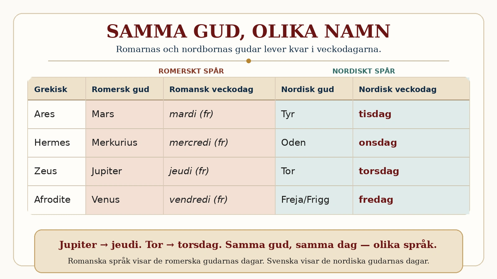

I delen om Grekland lärde vi oss att grekerna inte var först — de ärvde skrift, matematik och berättelser av folken före dem. Nu ska vi se exakt samma sak hända en gång till, ett steg fram i tiden. När romarna mötte den grekiska kulturen bytte de inte ut sina gudar. De gjorde något mer förbluffande: de parade ihop dem. Och den tråden leder oss ända hem — till de svenska veckodagarna.

Rom ärvde Greklands gudar. Romarna hade egna gudar, men när de lärde känna grekernas märkte de att gudarna liknade varandra — och behandlade dem då som samma gud under olika namn. Grekernas Zeus, himlens och åskans kung, blev romarnas Jupiter. Krigsguden Ares blev Mars. Kärleksgudinnan Afrodite blev Venus. Havsguden Poseidon blev Neptunus, och den vise Athena blev Minerva. Romarna tog till och med över de grekiska myterna nästan rakt av, och gav dem bara romerska namn. Precis som grekerna byggt vidare på äldre folk, byggde nu Rom vidare på grekerna.
Att översätta en gud. Det här sättet att tänka hade ett namn hos romarna: de "översatte" främmande gudar till sina egna. Mötte de ett annat folks gud som liknade en av deras egna, sa de: det där är egentligen vår gud, fast under ett annat namn. Det låter kanske underligt för oss, men det var ett vanligt sätt att förstå världen — gudarna var likadana överallt, folken kallade dem bara olika saker.
Och så — norrut. Här kommer det verkligt fascinerande, för samma sak hände med de nordiska och germanska folkens gudar. När deras gudar möttes med de romerska, parades de ihop på precis samma sätt. Och det starkaste beviset bär du med dig varje vecka, utan att tänka på det: veckodagarnas namn.
Romarna döpte veckans dagar efter sina gudar och planeter. De germanska folken i norr översatte dem sedan till sina gudar — och därför säger vi det vi säger:
Tisdag är Tyrs dag, efter den nordiska krigsguden Tyr. Romarna kallade samma dag "Mars dag" (efter krigsguden Mars) — på franska heter den än i dag mardi. Tyr och Mars var båda krigsgudar, alltså "samma" dag.
Onsdag är Odens dag. Romarna kallade den "Merkurius dag" (mercredi på franska). Oden och Merkurius sågs som samma sorts gud — den kringresande, listige.
Torsdag är Tors dag, efter åskguden Tor. Romarna kallade den "Jupiters dag" (jeudi på franska) — och Jupiter var ju just en åskgud. Tor och Jupiter, samma dag.
Fredag är Frejas (eller Friggs) dag, efter kärleksgudinnan. Romarna kallade den "Venus dag" (vendredi på franska) — och Venus var kärleksgudinnan.
Ser du mönstret? Varje gång de nordiska folken satte namn på en veckodag, tog de den romerska gudens dag och bytte ut mot sin egen motsvarande gud. Åskgud för åskgud, krigsgud för krigsgud, kärleksgudinna för kärleksgudinna. När du säger "torsdag" åkallar du alltså en nordisk åskgud — som romarna kallade Jupiter — som grekerna kallade Zeus. Tre folk, tre namn, samma gud i himlen.
Den stora tråden. Det här är kulmen på något vi följt genom hela kapitlet. Mesopotamien uppfann skriften — grekerna förfinade den. Grekerna formade gudar och idéer — romarna ärvde dem. Romarna namngav veckodagarna — de nordiska folken översatte dem — och vi säger dem än i dag. Historien är inte en rad separata folk som lever var för sig. Den är ett enda långt samtal, där varje folk tar emot något, gör om det till sitt eget och lämnar det vidare. Och vi står mitt i det samtalet: varje onsdag och torsdag bär du med dig ett arv som går rakt tillbaka genom Norden, genom Rom, genom Grekland, ända till de första högkulturerna. Vi påverkas av varandra långt mer än vi tror — ibland så djupt att vi inte ens märker det, förrän någon pekar på kalendern.